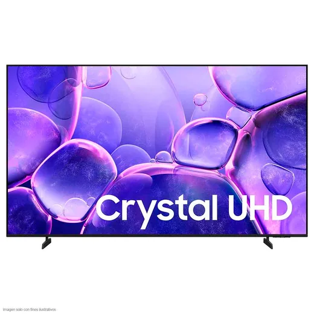
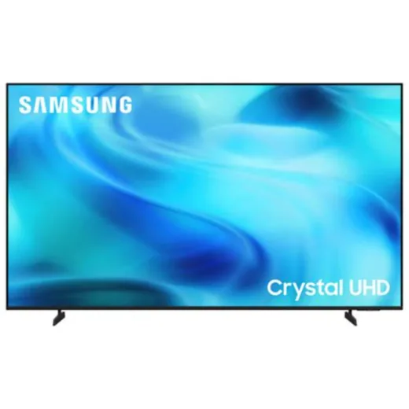
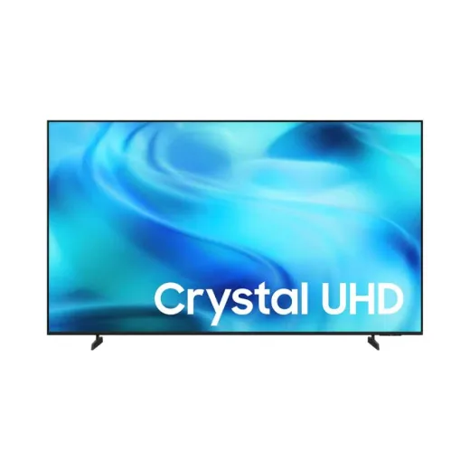

Samsung · Modelo UN70U8000F
Televisor Samsung 70" LED 4K Smart · UN70U8000F
L 14,995
Más barato en Lady Lee · ahorras hasta L 1,995 frente a la tienda más cara
Precio en cada tienda
| Tienda | Precio | Antes | Disponibilidad | |
|---|---|---|---|---|
| Lady Lee | L 14,995 | Disponible | Ver en tienda › | |
| Walmart | L 15,394.5 | Disponible | Ver en tienda › | |
| Diunsa | L 16,990 | Disponible | Ver en tienda › |
Precios referenciales tomados de cada tienda el 21 de noviembre de 2026. El precio válido es el que muestra la tienda al comprar.
Historial de precio
Lo seguimos desde el 1 de noviembre. Precio más bajo registrado: L 14,995 en Lady Lee (20 de noviembre), igual que hoy. Cambios de precio registrados: 6.
Características
| Cantidad de Puertos USB | 1 |
|---|---|
| Cantidad de Puertos HDMI | 3 |
| Origen del Producto (país) | Corea Del Sur |
| Color | Negro |
| Marca | Samsung |
| Medida de altura | 90 cm aproximadamente |
| Medida de ancho | 156 cm aproximadamente |
| Medida de peso | 25 kg aproximadamente |
| Modelo o serie del producto | U8000F Serie Crystal Uhd |
| País de Origen - Ensamblaje | China |
| Panel | Led |
| Resolución | 4K UHD |
| Tamaño de pantalla | 70" |
| Tecnología de visualización | LED |
| Tipo de conector | HDMI, USB |
Descripción
Disfruta de una experiencia visual inmersiva con el televisor LED Smart Samsung de 70″ (modelo UN70U8000FPXPA), ideal para salas grandes o espacios de entretenimiento en casa. Gracias a su resolución 4K Ultra HD (3840 × 2160 píxeles), cada escena se ve con nitidez, colores vibrantes y gran detalle. Su procesador Crystal 4K mejora la imagen, incluso de contenidos con menor resolución, y la tecnología Motion Xcelerator minimiza el desenfoque en escenas de acción rápida
Su diseño elegante “MetalStream” con bordes delgados realza cualquier ambiente, mientras que su plataforma Smart TV con sistema Tizen te da acceso a aplicaciones de streaming, asistentes de voz y funciones inteligentes como SmartThings. Además, cuenta con múltiples entradas (HDMI, USB) para conectar consolas, barras de sonido u otros dispositivos, y tecnologías de sonido como Object Tracking Sound Lite para una experienci
Otros televisores Samsung
 Televisor Samsung 65" Mini LED 4K · UN65M70HAL 14,990En 3 tiendas · más barato en Diunsa
Televisor Samsung 65" Mini LED 4K · UN65M70HAL 14,990En 3 tiendas · más barato en Diunsa Televisor Samsung 70" LED 4K Smart · UN70U8000HL 14,990En Diunsa
Televisor Samsung 70" LED 4K Smart · UN70U8000HL 14,990En Diunsa
Televisor Samsung 65" LED 4K SmartL 12,995En Lady Lee Televisor Samsung 65" LED 4K · UN65U8000FL 12,499En 3 tiendas · más barato en Elektra
Televisor Samsung 65" LED 4K · UN65U8000FL 12,499En 3 tiendas · más barato en Elektra
Televisor Samsung 75" LED 4K · UN75U8000HL 17,497En 5 tiendas · más barato en La Curacao Televisor Samsung 55" QLED 4K Smart · QN55QN80FAL 17,990En Diunsa
Televisor Samsung 55" QLED 4K Smart · QN55QN80FAL 17,990En Diunsa Televisor Samsung 65" LED 4K · UN65U8000HL 11,997En 5 tiendas · más barato en La Curacao
Televisor Samsung 65" LED 4K · UN65U8000HL 11,997En 5 tiendas · más barato en La Curacao Televisor Samsung 75" Crystal UHD 4K Smart · U8000FL 17,995En Lady Lee
Televisor Samsung 75" Crystal UHD 4K Smart · U8000FL 17,995En Lady Lee